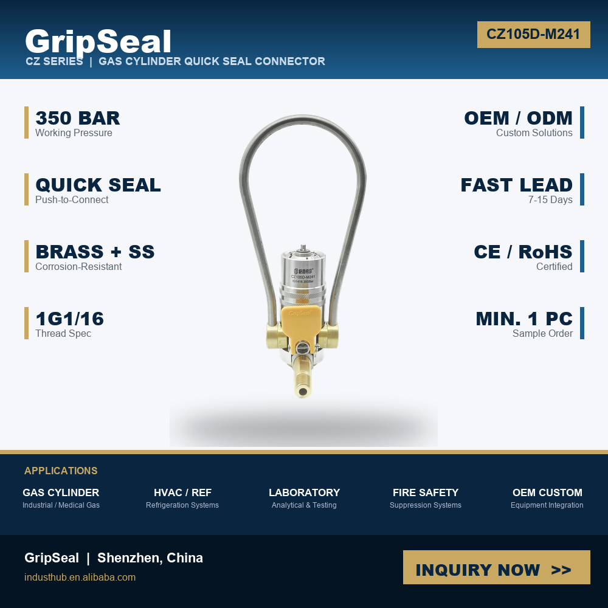
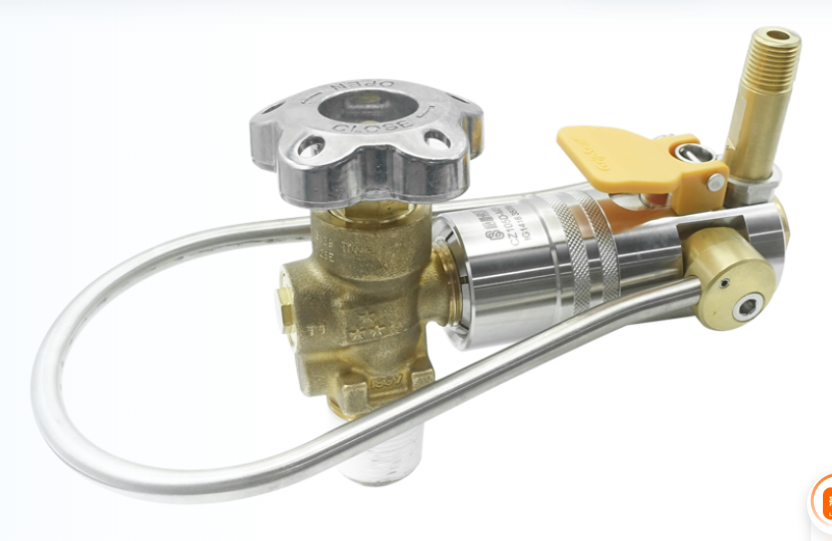
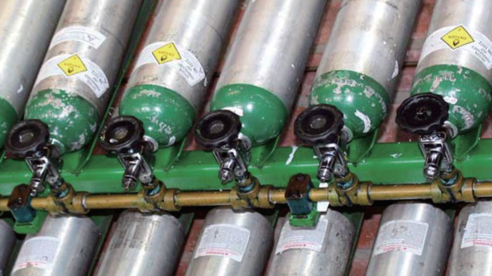

推荐 产品
相关系列对比
在确定最终型号前，可先对比相邻的连接与检测系列。
标准 G5/8 充装口接口、金属滑套锁紧，最高 240 bar（可定制至 400 bar）；用于工业与医用气体充装站、气瓶检测与反复充装维护的高效连接方案。



CZ 系列采用标准 G5/8 外螺纹充装口，金属滑套操作锁紧；多重内置 O 型圈保证气密，适配高频充装与反复维护连接。
当项目为气瓶阀充装、气体充注或压缩气瓶检测，且需要标准充装口与稳定气密连接时，可评估该系列。
| 最高工作压力 | 240 bar（标准）；最高可定制至 400 bar |
|---|---|
| 连接螺纹 | G5/8 外螺纹（标准充装口，通用性强）；可选 CGA 系列（美标气瓶充装口） |
| 手柄类型 | 金属滑套（Metal Slide Sleeve），滑动锁紧 |
| 可充气体 | 压缩空气 / 氧气(O₂) / 氮气(N₂) / 氩气(Ar) 及氦气等工业与医用气体 |
| 流体接口 | NPT / G 1/4"、1/2"、3/4" 内螺纹（可按需定制） |
| 密封材质 | Viton (FKM)；多重内置 O 型圈保证气密 |
| 型号系列 | CZ105(标准) / CZ105D / CZ205 / CZ205D / CZ205S（带柱塞变体） |
| 结构特性 | 带柱塞变体含内部阀芯，需选配顶针式接口 |
通用充装口螺纹，适配主流气瓶阀，免转换直接对接，降低适配成本。
滑动套操作，连接可靠、重复性好，适合高频充装作业与反复维护。
Viton(FKM) 密封 + 多重内置 O 型圈，保障充装过程无泄漏、更安全。
CZ105D / CZ205D / CZ205S 含内部阀芯，适配带阀芯气瓶的充装需求。
| 型号 | 可充气体 | 螺纹 | 最大压力 | 手柄 | 带柱塞 | 密封 |
|---|---|---|---|---|---|---|
| CZ105 | 压缩空气 / O₂ / N₂ / Ar | G5/8 外螺纹 | 240 bar | 金属滑套 | 否 | Viton (FKM) |
| CZ105D | 压缩空气 / O₂ / N₂ / Ar | G5/8 外螺纹 | 240 bar | 金属滑套 | 是 | Viton (FKM) |
| CZ205 | 压缩空气 / O₂ / N₂ / Ar | G5/8 外螺纹 | 240 bar | 金属滑套 | 否 | Viton (FKM) |
| CZ205D | 压缩空气 / O₂ / N₂ / Ar | G5/8 外螺纹 | 240 bar | 金属滑套 | 是 | Viton (FKM) |
| CZ205S | 压缩空气 / O₂ / N₂ / Ar | G5/8 外螺纹 | 240 bar | 金属滑套 | 否 | Viton (FKM) |
CZ 系列是气瓶充装与检测场景的高效连接方案，覆盖工业、医用气体与压缩气瓶测试。
氦气、氮气、氩气等惰性 / 工业气体的气瓶充装，安全高效。
医院与医疗机构的医用级氧气瓶充装连接，稳定可靠。
压缩气瓶的压力测试与泄漏检测中的气密连接。
高频重复充装与维护连接点的快换，提升作业节拍。
在确定最终型号前，可先对比相邻的连接与检测系列。